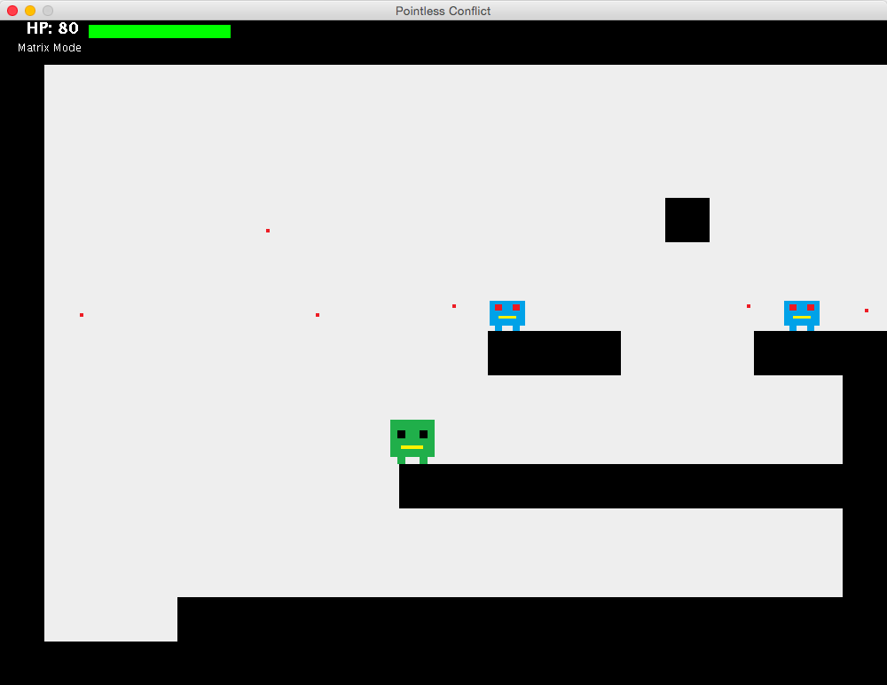
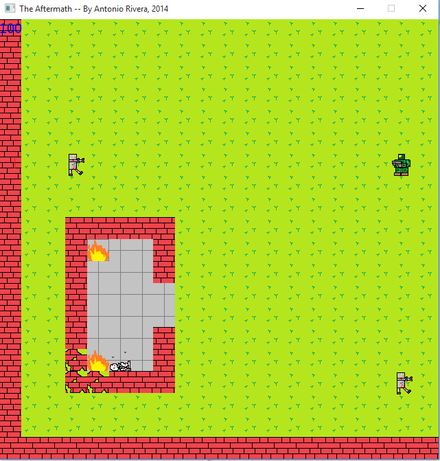

.
2012
In 11th grade I took an Intro to Game Programming course at Kentridge High School. As my final project, I wrote a two-player game in C# and XNA. The game was a 2D shooter where
competing players attempted to reduce the lifebar of their opponent to zero.
The game used a simple collision-detection algorithm and a 2D integer array to store, render
and allow players to interact with the stages.
2013

In 12th grade, as a final project for AP Computer Science, I wrote a single-player platformer/2D-shooter.
The player had to move and jump to avoid enemy attacks, and had the ability to
shoot at enemies and slow down time. It featured several different levels and two bosses. It utilized an
an a posteriori collision-detection system and a 2D integer array to store level data.
Source Code and Executable .jar File
2014

In the summer following my freshman year at Massachusetts Institute of Technology, I worked on programming a small game in C++ and an open-source multimedia library called SFML. It is a 2D shooter that uses both a keyboard and mouse. There are multiple screesn for the player
to explore, as well as some simple enemies and the beginning of a puzzle. This game involved more complex
sprite sheets, as well as some animation in the background tiles. The game is incomplete, but I wrote enough
code for it to be playable.
Source Code and Executable File
I also began another game, this time a sidescroller. This time my goal was to make the collision detection
and rendering as efficient as possible. I also created a way to convert images into level data,
so that the level creation process would be much faster than before. This game, though it is more of a prototype,
features animation in the main character and the single enemy. Collision detection between the player and the
environment is fully functional, but player-enemy detection has not yet been implemented. The included level
features both horizontal and vertical scrolling, something I had not included in any prior games.
Source Code and Executable File
2015
In the summer after my sophomore year of college, I worked at Ultimate Software as a software engineering intern. I worked on three internal tools used by the company. On the first, I did back-end development in C#, adding functionality to a testing software. More specifically, I made it so that parameters (variables) could be used in the steup and teardown of test files. I also worked on several small bug fixes.
The next project I worked on was a build console that displayed the progress of projects that were currently being built within the company. I mostly worked on front-end bug fixes and unit tests. I also set up and carried out performance testing using Apache JMeter.
The last project I worked on was a visual display of the hierarchical organization of projects within the company. As before, I worked on visual improvements and bug fixes -- mostly involving animations -- and I set up and wrote over 100 front-end unit tests to the project. For the unit testing, I used Jasmine and Karma with Javascript to write the tests.